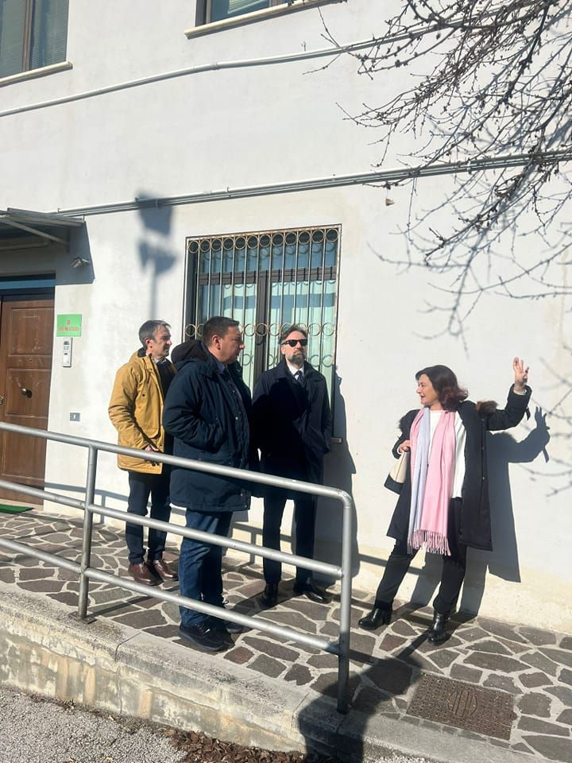
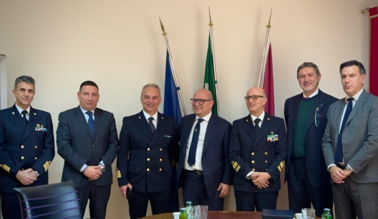
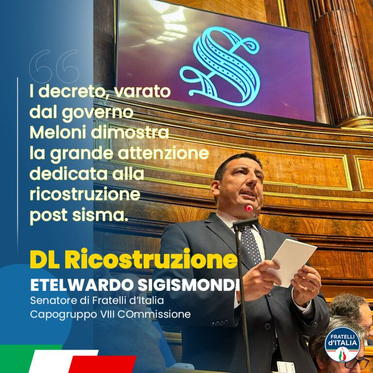
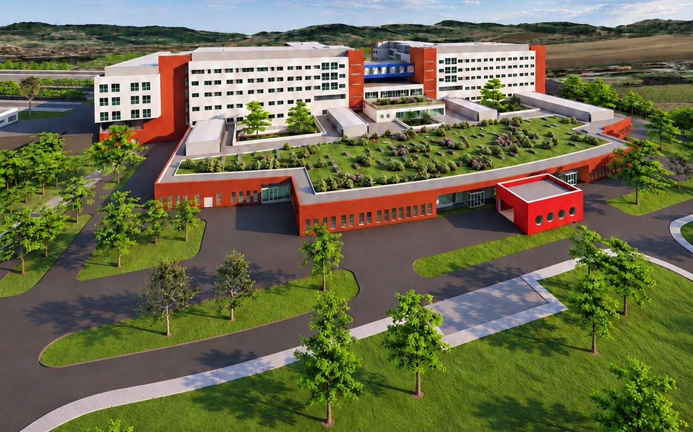
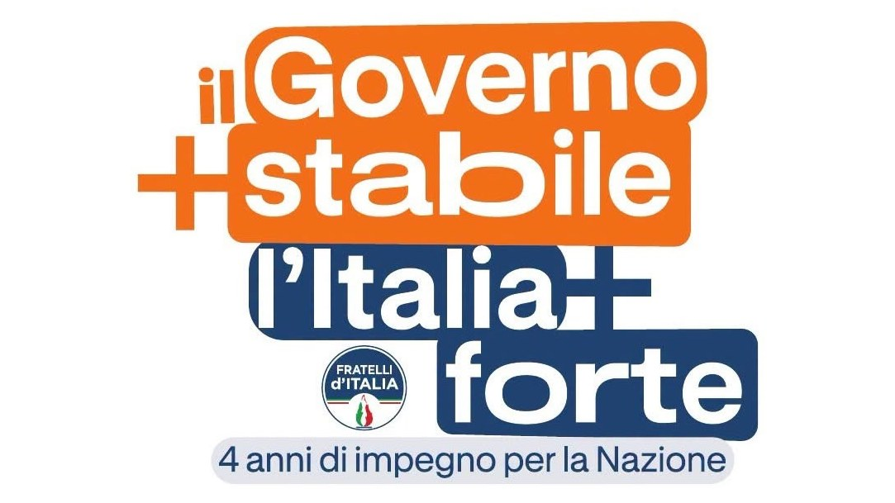
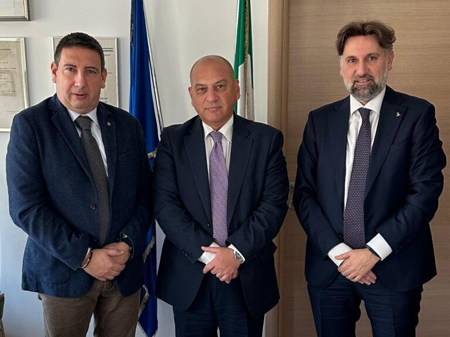
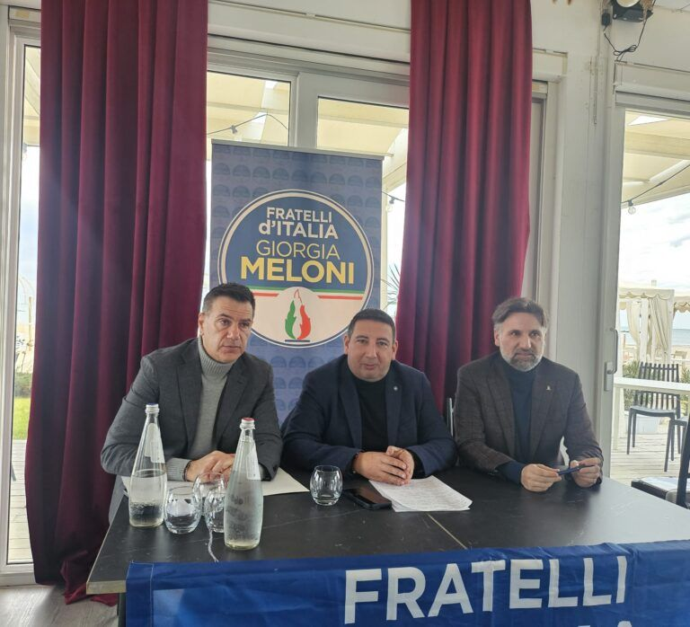
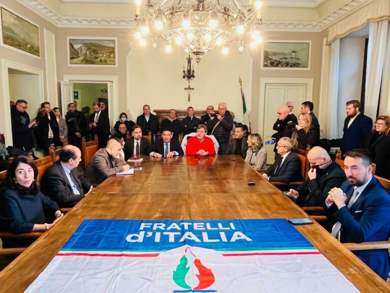

En examen
Tribunales subprovinciales de los Abruzos
Avezzano, Lanciano, Sulmona y Vasto: de las prórrogas anuales al proyecto de ley del Gobierno para la estabilización
Abrir el dosier
Desde el territorio
Lo que llega desde los Abruzos y cómo se lleva al Parlamento: cuestiones, encuentros, visitas de inspección, actos.
Dosieres

Avezzano, Lanciano, Sulmona y Vasto: de las prórrogas anuales al proyecto de ley del Gobierno para la estabilización

El ferrocarril Pescara–Roma, la Strada dei Parchi (A24–A25), la seguridad de la Trignina y el puente sobre el Trigno
El ddl S.1877 para declarar monumento nacional la plaza Caduti di Marcinelle y la capilla de las Víctimas, aprobado por el Senado y remitido a la Cámara

Del DL Ricostruzione 2023 (Sigismondi ponente) a las escuelas del cráter y a la ley marco sobre la reconstrucción tras las catástrofes
Cronología
Por qué importa: Tras años de prórrogas anuales, es el paso que lleva al Pleno la solución definitiva para los cuatro tribunales. La prórroga vigente vence el 31 de diciembre de 2026.
Tribunales subprovinciales de los Abruzos
Por qué importa: El temporal de primavera derribó el puente sobre el Trigno en la carretera estatal 16 y cerró carreteras en toda la provincia. El comunicado ordena los recursos ya asignados y los pasos que la ley prevé desde la emergencia hasta la reconstrucción.
Infraestructuras y comunicaciones

Por qué importa: El Vastese espera el nuevo hospital desde hace décadas. Con la adjudicación, la obra entra en la fase del contrato y del proyecto de ejecución.
Por qué importa: El olivar y la ganadería de las zonas interiores están entre los sectores que financia el plan: para Abruzos es un apoyo a quienes mantienen vivos los pueblos del interior.

Por qué importa: De la iglesia solo queda el portal a lo largo de la via Adriatica. La propuesta abre un debate ciudadano sobre cómo transmitir su memoria a las nuevas generaciones, respetando la fragilidad del lugar y el panorama.

Por qué importa: El coordinador regional mide la adhesión del territorio: entre los participantes, muchas personas sin carné de partido.

Por qué importa: La renovación del contrato de Seguridad y Defensa prevé subidas medias de unos 200 euros al mes.

Por qué importa: Recursos para asegurar el barrio Santa Maria en Chieti y un festival para los pueblos marineros.

Sigismondi ” En Abruzzo tenemos candidatos fuertes, autorizados y competentes”. Han sido presentados oficialmente, esta mañana, los candidatos de Fratelli d’Italia a las…
Por qué importa: Más recursos para cubrir los mayores costes que debe afrontar el sistema sanitario regional.
Los comunicados que mencionan expresamente una zona de los Abruzos.